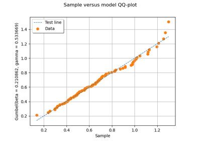

Statistical tests¶


Draw the QQ-Plot

Test identical distributions

Test Normality

Test the copula

Kolmogorov-Smirnov : understand the p-value
Kolmogorov-Smirnov : understand the p-value

Kolmogorov-Smirnov : get the statistics distribution
Kolmogorov-Smirnov : get the statistics distribution